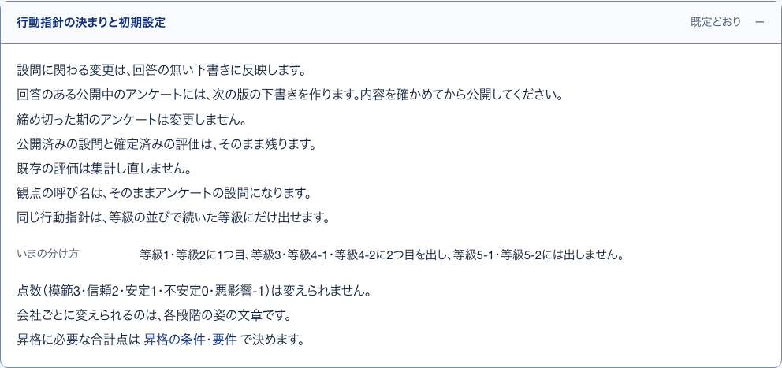
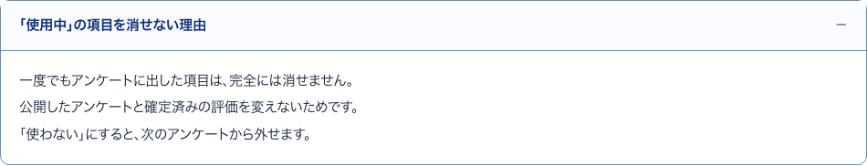
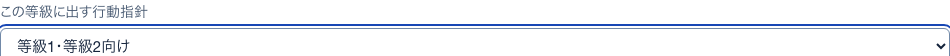
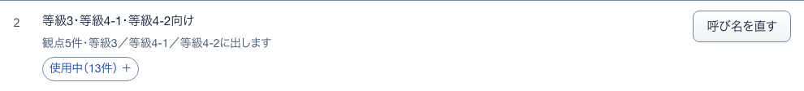
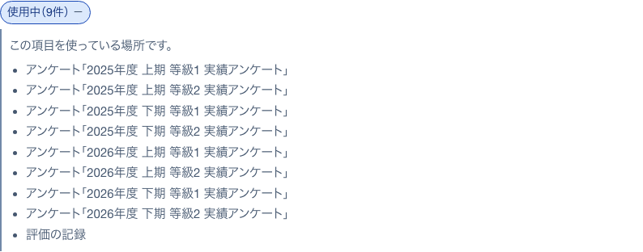
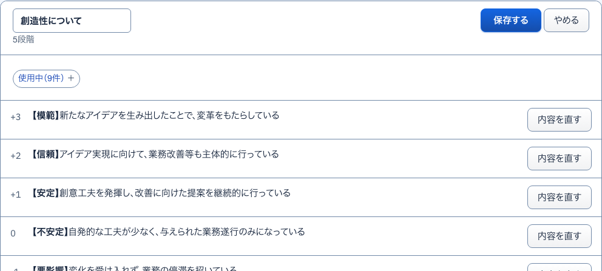

29行動指針の決まりと初期設定開いて見る
S16 行動指針 ・ 押すもの: 「行動指針の決まりと初期設定」

中に出るもの
- 変更が反映される範囲
- 観点の呼び名は、そのままアンケートの設問になります。
- 同じ行動指針は、等級の並びで続いた等級にだけ出せます。
- いまの分け方（既定と違うときは既定の分け方と違う等級）
- 点数（模範3・信頼2・安定1・不安定0・悪影響-1）は変えられません。
- 会社ごとに変えられるのは、各段階の姿の文章です。
中で押せるもの
- 昇格の条件・要件: 昇格の条件・要件へ移る（→ S15）
34消せない理由開いて見る
S16 行動指針 ・ 押すもの: 「「使用中」の項目を消せない理由」

中に出るもの
- 一度でもアンケートに出した項目は、完全には消せません。
- 公開したアンケートと確定済みの評価を変えないためです。
- 「使わない」にすると、次のアンケートから外せます。
30出す行動指針の選択肢選ぶ一覧
S16 行動指針 ・ 押すもの: 「この等級に出す行動指針」 ・ 閉じる: Esc

中に出るもの
- 行動指針を出さない
- 各基準の呼び名
- 選べない基準には理由がかっこで付く
中で押せるもの
- 選ぶ: 選び直す（保存は「この等級の設定を保存」で行う）
31基準の呼び名を直す開いて見る
S16 行動指針 ・ 押すもの: 「呼び名を直す」 ・ 閉じる: やめる

中に出るもの
- この基準の呼び名
中で押せるもの
- 保存する: 基準の呼び名を保存する
- やめる: 欄を閉じる
33基準を追加開いて見る
S16 行動指針 ・ 押すもの: 「＋ 基準を追加」 ・ 閉じる: やめる
中に出るもの
- 新しい基準の呼び名（例：Manager向け）
- 中身の作り方（〇〇を複製する ／ 空から作る）
- 作り方に合わせた注記
中で押せるもの
- この内容で作る: 新しい基準を作る
- やめる: 欄を閉じる
32使用中開いて見る
S16 行動指針 ・ 押すもの: 「使用中」

中に出るもの
- この項目を使っている場所です。
- アンケートの名前
- 確定済みの評価
35観点の呼び名を直す開いて見る
S16 行動指針 ・ 押すもの: 「呼び名を直す」 ・ 閉じる: やめる

中に出るもの
- 観点の呼び名の入力欄
中で押せるもの
- 保存する: 観点の呼び名を保存する
- やめる: 欄を閉じる